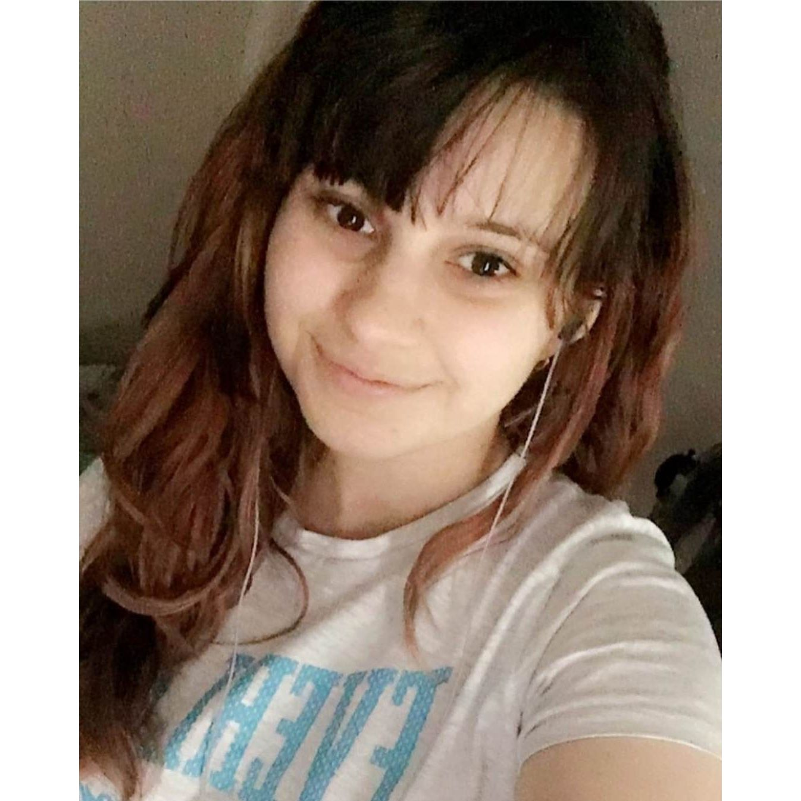

Student ID: S3743586
Name: Nicole Brooker
Email: S3743586@student.rmit.edu.au

My interest in IT began when I was very young. I grew up in a very tech-oriented family, so technology has been a major part of my life for as long as I can remember. However, it was not my initial career choice due to not having the time required to study and acquire appropriate qualifications. I currently have more time and look forward to learning and updating my knowledge of IT. I chose to come to RMIT because I was seeking remote online study, as I have to work during usual in-person university classes. RMIT seemed like the best option because I noticed that their Information Technology course had been delivered online for several years. I am hoping that this means the course works well when studying remotely. During my studies I hope to learn up-to-date IT skills required for a job in IT. I’m not entirely sure what job I would like but I have been exploring options during this assessment. Along with IT skills, I hope to further learn other skills useful for employment, such as group work and organisation.
My ideal job is similar to this:
The results of my Myers-Briggs personality test suggest that my personality type is INFJ. This means that I have introverted, intuitive, feeling, and judging personality traits. The 16personalities.com website suggests that this means I am the “Advocate” type. This means I approach things with deep thoughtfulness and imagination.
The results of my Mumford and Honey learning styles test are:
The results of my Big Five Personality test is:
The results of these tests aren't particularly meaningful to me because when I previously took the Myers-Briggs test around 5 years ago I had very different results. This suggests to me that the results are subject to change and may not be an accurate representation of how I work/think/feel. I did some further research and it seems that they are generally inaccurate https://jobtalk.indiana.edu/HRMWebsite/hrm/articles/develop/mbti.pdf .
When forming a team, I could take into account people’s personalities based on these tests so that they match or work well with mine. An example of this would be seeking out working with other people who have similarly high theorist scores (from the Mumford and Honey learning styles test). This would mean we both have a similar approach to learning, in particular with regards to using models, concepts and facts in order to learn.
However, I believe it is important to learn to work with people who you may clash with and develop ways to manage differences. This is because it is not always possible to pick and choose who you will be working with in a team and it is beneficial to develop skills to work well with others. For this reason I would not be opposed to working in a team with people who have different or clashing personality types.
This project will consist of a smartphone app that allows users in Australia to record, share, discuss and analyse local flora, fauna and fungi. Using mapping tools, users will be able to record sightings of flora, fauna and fungi on the go and log details directly into the app. Users will be able to share their findings within the app so that users will be able to see what other users have recorded in their area of interest. Users will also be able to discuss their findings with each other and community led science projects will be supported through in app features. The app will also feature in app tools to analyse the data that has been shared. The major difference between this app and similar apps which allow recording and sharing of wildlife data are the discussion and analysis tools that this app will provide.
This app will have four major features - the recording, sharing, discussing and analysing of flora, fauna and fungi.
Recording will be done by the users of the app. Users will be required to sign up for an account to allow for moderation, privacy and saving of any discussion or analysis that they participate in. In the app, there will be a map feature which shows users their area of interest as well as optional GPS features for users who want to record local data. The records will be kept as data points and show up on the map where they are recorded. Overtime, it is important that the records are updated and old data is stored separately so as not to confuse it with current trends. Old data will still be kept, however, in order to assist with any analysis of trends overtime. Moderation to support accuracy of data is important. To encourage accurate recording, users will be able to report false or misleading data.
Users will be able to determine whether they want to share their records with other users through various privacy settings. Users will be able to share or hide whatever data they choose to store on the app, including all of their records, their username/profile, groups or discussions they have participated in and any analysis they have done. Moderation is important to ensure people are not sharing false data, such as suggesting there are Great White Sharks in the middle of the outback. Users will also be able to share any of the analysis they have done using the in-app analysis tools.
In order to encourage people to engage with local wildlife, discussion and community projects will be supported in the app. Users will be able to discuss topics such as species identification and local species. These discussions will be open to everyone and aim to be welcoming to beginner learners. Users will also be able to see local community science projects and request to join those that they have an interest in. These projects will consist of record sharing and analysis as well as any relevant discussions. This app is aiming to be beginner friendly so there will also be projects that are monitored by moderators to introduce people to species identification, recording and analysis.
The app will offer in-app tools to analyse records that they have an interest in. The analysis tools will allow users to participate in the four main types of data analysis; descriptive, diagnostic, predictive, and prescriptive. The app will have filter tools for analysis such as location, time of day, day/month/year, single species, multiple species etc. Users will be able to use charts, maps, and diagrams to display trends in the records in their area of interest. With the analysis tools users will be able to find trends within flora, fauna and fungi populations and share them with the community. This will also allow for data to be easily exported to other platforms. This is one of the unique features of this app so it is important to listen to user feedback and update, upgrade and support these tools.